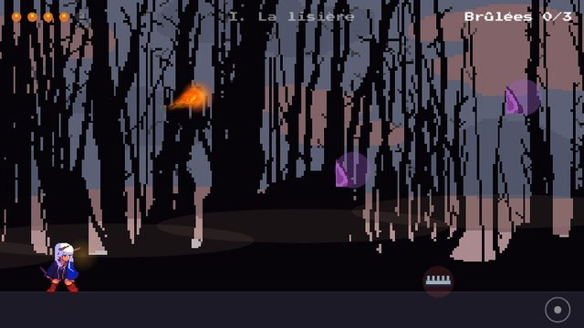
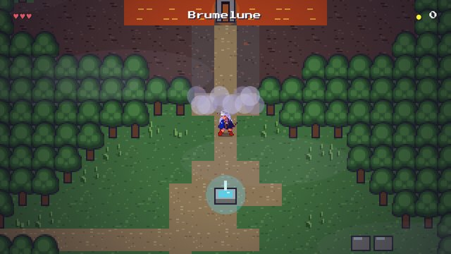

Toutes les versions
Chaque version du jeu est conservée et reste jouable. La plus récente est en haut.
V3 · à venir
La prochaine idée de jeu viendra ici.

La Gardienne
On lance une boule de feu et on courbe sa trajectoire en penchant le téléphone, pour brûler les traces du chasseur qui a tué le cerf blanc. Trois zones.
Mise de côté : le contrôle au gyroscope s'est révélé peu pratique.
Jouer
Petit Saut
Jeu de plate-forme en pixel art : l'île de Brumelune, trois missions, le bouclier, la ravageuse et le combat contre le Roi des slimes, avec deux fins.
Jouer